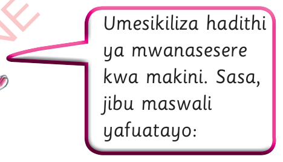

Mwanasesere
Moza alikuwa na mwanasesere wake. Mara nyingi, alipenda kucheza naye. Kila siku asubuhi, aliamka na kucheza naye. Siku moja, Moza alimpoteza mwanasesere wake. Alimtafuta kila mahali lakini hakumwona. Alimuuliza mama yake kama alimwona mwanasesere wake. Mama yake alimwambia kuwa aende akafagie na kupanga chumba chake.
Chumbani mwake, nguo zilikuwa zimezagaa kila mahali. Nguo hizo zilichanganyika, safi na chafu. Wakati anapanga nguo zake, alimwona mwanasesere wake. Alikuwa amefunikwa na nguo hizo. Moza alifurahi sana na kusema kuwa uchafu haufai. Tangu siku hiyo, Moza aliacha uchafu. Alifanya usafi chumbani mwake na kupanga nguo zake vizuri.

Umesikiliza hadithi ya mwanasesere kwa makini. Sasa, jibu maswali yafuatayo:
- 1. Hadithi uliyoisikiliza inahusu nini?
- 2. Nani alipoteza mwanasesere wake?
- 3. Mama alimwambia Moza akafanye nini chumbani?
- 4. Je, wewe unasafisha vipi chumba chako?
- 5. Kwa nini tunatakiwa kusafisha vyumba vyetu?